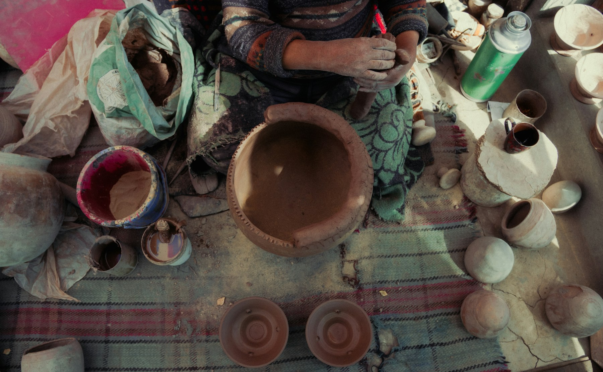

The most memorable way to discover a destination is through the people who understand it deeply.
With the right guide, a familiar landmark becomes a living story. A private home, artist’s studio or quiet neighbourhood can reveal more than a crowded itinerary ever could.
We create cultural journeys that feel personal, thoughtful and free from the usual rush.
The Experience
Culture is found everywhere: in architecture and art, but also in rituals, conversations and the way daily life unfolds.
We arrange private visits, specialist guides and meaningful encounters that help you see a destination with greater depth. The aim is not to fill every hour, but to choose the moments that make a place come alive.
Access That Changes the Experience
Sometimes, timing and access make all the difference.
Enter a museum before it opens, visit a historic site after the crowds have gone or step inside a private collection with the person who knows it best. These experiences allow you to slow down, ask questions and connect with what you are seeing.
